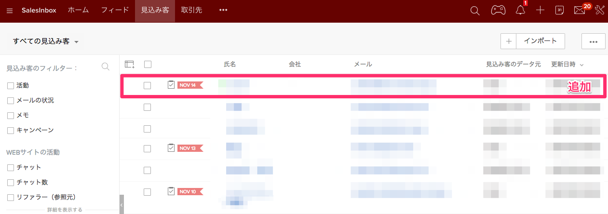
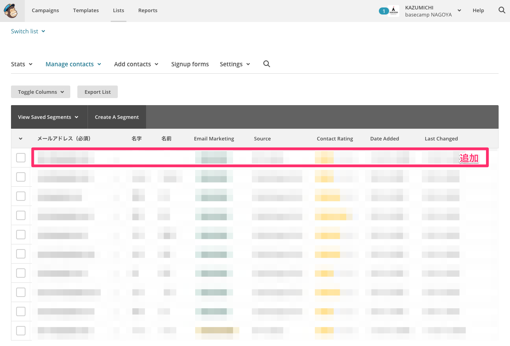

## 外部サービスと拡張アプリと
a-blog cms
有限会社アップルップル 堀 悟大
1. CMSと他の外部サービスの連携について
2. a-blog cms の拡張アプリとは
3. 今回用意した拡張アプリの紹介
4. 拡張アプリの今後の展望
## 1. CMSと他の外部サービスの連携について
全ての機能をCMS側に持つのではなく、ある分野に特化したサービスに柔軟に連携できることが今のCMSに求められている。

## 2. a-blog cms の拡張アプリとは
- a-blog cmsのコアなプログラムをいじらなくても機能を提供できる仕組み
- 開発側の人間以外でも気軽にプラグインを作って公開できるように用意された仕組み
## 2. a-blog cms の拡張アプリとは
今後は外部サービスとの連携にもっとこの拡張アプリを使っていけばいいのでは？
### 次のバージョンでは
あまり使われていなかった拡張アプリが活躍

以下が新たに追加された拡張アプリです。
- Zoho CRM
- MailChimp
- Google SpreadSheet
- Slack
# Zoho CRM

# Zoho CRM
クラウド型の顧客管理システムです。見込み客の開拓や商談/売上/顧客の管理が行えます。
以前、弊社でZoho CRMについてはブログを書いています。
- [https://www.appleple.com/blog/marketing/zoho201709.html](https://www.appleple.com/blog/marketing/zoho201709.html)
- [https://www.appleple.com/blog/event-report/zoholics_japan_2017.html](https://www.appleple.com/blog/marketing/zoho201709.html)
# Zoho CRM
お問い合わせフォームなどから送信された内容をZoho CRMに登録します。
# Zoho CRM
a-blog cms 拡張アプリ画面
- 各フォームの Insert権限やUpdate権限の設定をします。
- a-blog cms 側のキーに対応するzoho側のキーの設定

# Zoho CRM
あとは、カスタマイズなしでお問い合わせフォームの内容をZoho側に登録可能
# Zoho CRM

# SpreadSheet
お問い合わせフォームなどから送信された内容をGoogle SpreadSheetに行として追加します。
# SpreadSheet
普段お使いのお問い合わせフォーム等に下のようなコードを入れるだけ！
```html
```
# SpreadSheet
実行結果
# Slack
# Slack
## 管理ページ
- contactFormで送信された内容をメッセージとして、Slackのapplepleチャンネルにsteelydylanとして送信。
- お問い合わせフォームのHTML的なカスタマイズの必要はなし
# Slack
実行結果
# MailChimp
お問い合わせフォームなどから送信された内容をMailChimpのリストに追加します。
# MailChimp
a-blog cms 拡張アプリ画面
- 各フォームの Insert権限やUpdate権限の設定をします。
- a-blog cms 側のキーに対応するMailChimp側のキーの設定
# MailChimp
あとは、カスタマイズなしでお問い合わせフォームの内容をMailChimp側に登録可能
# MailChimp

## 拡張アプリを組み合わせることで...
フォームの内容を Zoho CRMに登録して最終的にSlackに通知するといった合わせ技も可能!
# 拡張アプリの今後の展望
## 拡張アプリの今後の展望
### 今後期待される仕組み1
拡張アプリ自体はCMSのパッケージに含めず、他のパッケージとして管理して、そのアプリを管理画面上からダウンロードして使える仕組み
## 拡張アプリの今後の展望
### 今後期待される仕組み2
a-blog cmsの開発元のみならず独自に開発した拡張アプリを他のユーザーでも公開できるような場を設ける
## 拡張アプリの今後の展望
こんな拡張アプリが欲しいというご要望お待ちしています！
# 4. 拡張アプリの作り方
聞きたい方はいらっしゃいますか？
聞きたい方はハンズオンの時にお教えします！
### 外部サービスと連携しやすい仕組みを今後も開発していきます！
# Thank You!
Twitter: @steelydylan
GitHub: steelydylan